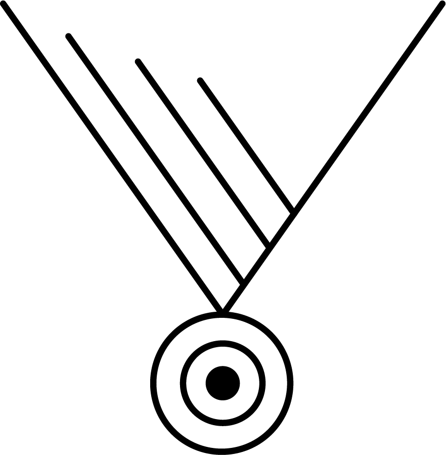
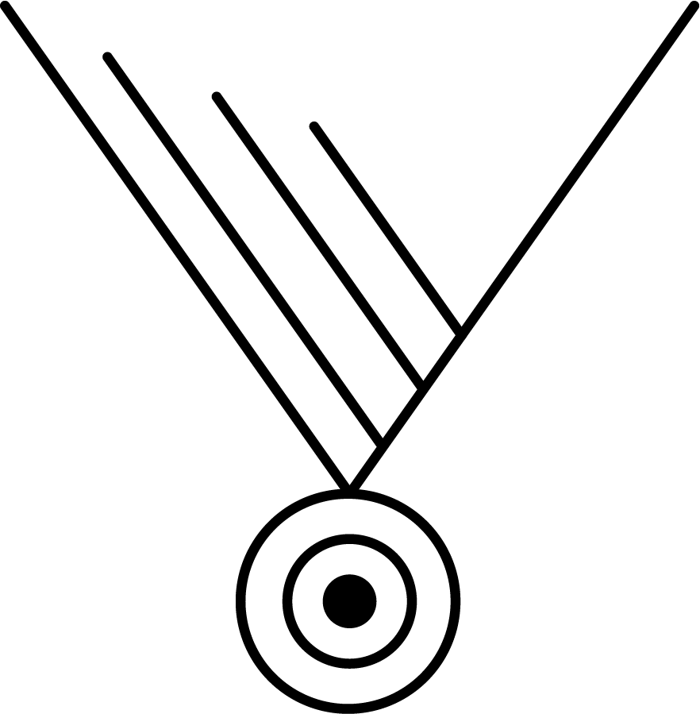

Parcours350
Bienvenue sur mon site
La ville de Charleroi a fêté ses 350 ans en 2016, à cette occasion plusieurs choses dont un parcours historique ont été créé. Ce parcours revenait sur plusieurs lieux emblématiques de la ville. Je vous propose une alternative à sa réalisation à travers ma propre version qui s’en inspire.
Pour y participer, rien de plus simple, il vous suffit de suivre ces instructions :
Télécharger l’application sur
ce lien, vous pouvez le faire chez vous ou dans un centre commercial.
Télécharger le document pdf comprenant : le parcours et l’historique des lieux.
Instructions :
Commencer à la gare et suivez le parcours.
Répondez aux questions en observant les lieux et/ou en consultant le document pdf, vous pouvez aussi lire les plaques se trouvant sur le parcours.
Si vous êtes fatigué ou que vous avez une petite soif, n’hésitez à marquer un arrêt dans un des nombreux cafés, bars ou restaurants se trouvant en ville.
Bon parcours, surtout n’oubliez pas de vous amuser et de vous cultivez.
Avec quelques modifications, il est également possible d’adapter l’application à un autre parcours ou une autre ville. Si vous avez des demandes spécifiques, n’hésitez pas à me contacter. Je ferais au mieux pour vous répondre dans un certain délai.
 
